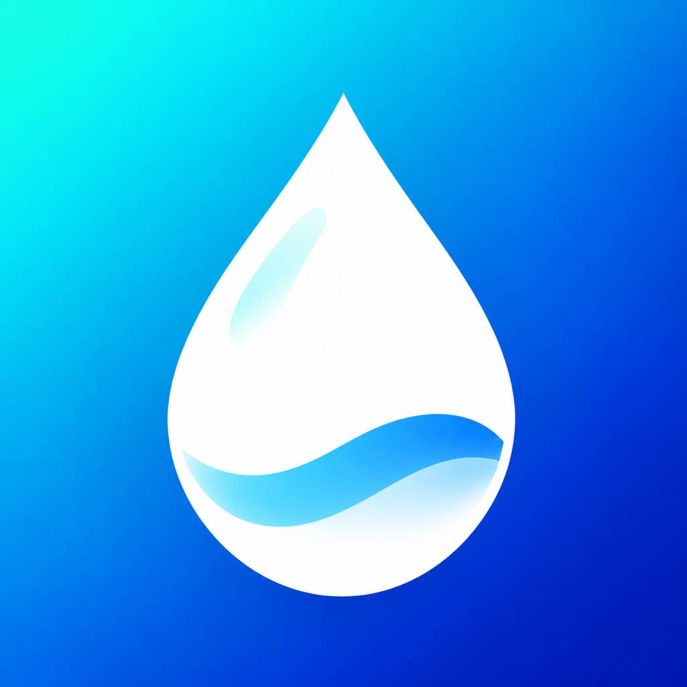

Hydriva
Su İçme Takip
İçtiğin suyu kaydet, günlük hedefini belirle, haftalık raporlarını gör ve su molalarını hatırla.
Günlük takip, senin cihazında
Su kayıtları, hedefler ve hatırlatmalar cihazında saklanır. Hesap açman gerekmez. Grafikler kayıtlarını gösterir; vücudundaki sıvı düzeyini ölçmez.
Hydriva Pro
Pro, haftalık ve aylık gelişmiş tüketim analizlerini açar. Türkiye App Store fiyatları ve uygun hesaplar için ücretsiz deneme bilgisi satın alma ekranında gösterilir. Satın alımlar Apple tarafından işlenir.
Yardım ve destek · Gizlilik politikası · Kullanım ve abonelik koşulları